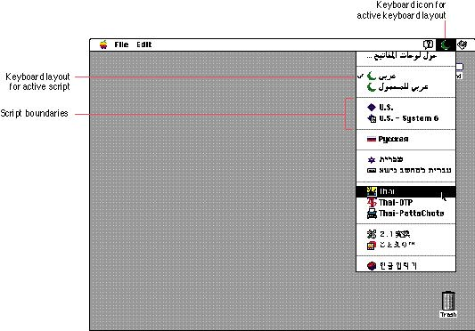

|
KeyboardsAs stated previously, users can install multiple script systems. If the Operating System determines that all conditions are met, it enables thescript system, making it available to users. A script system can contain more than one keyboard layout that maps character codes to keys on a physical keyboard, and it can support more than one attached physical keyboard. Double-byte scripts contain input methods (which allow users to enter double-byte characters) and keyboard layouts. See Inside Macintosh: Text for information on installing and enabling script systems and keyboard resources. The Operating System adds a Keyboard menu when more than
one script system is present or a localizable resource flag
is set. This menu simplifies A keyboard icon represents a localized keyboard layout
or an input method. If you develop keyboards, keyboard
resources, or input methods, you The Keyboard menu groups the keyboard layouts and input methods by script system. These groups are separated by dotted lines on black-and-white screens or gray lines on color screens. Figure 2-5 shows an example of the Keyboard menu with the keyboard icon and layout for the active script system, and the script boundary area of the menu. Only one keyboard layout or input method, and one physical keyboard are active at a time; the active condition is indicated by a checkmark in the menu.  |